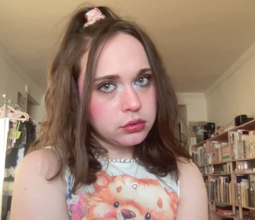

ABOUT
Charlie Chayyim Shaw (b. 2000, Oakland, CA; BFA Photography '22) is a multidisciplinary artist and archivist with an MSLIS and Advanced Certificate in Archives from Pratt Institute, Manhattan.
By day Chayyim works at Cornell Weill’s Oskar Diethelm Library, helping to steward and curate one of the world’s foremost collections of historical materials on psychiatry, witchcraft, hypnosis, and the like. By night Chayyim is a drag queen working with lens-based practices, performance, and archival interventions.
Since 2024 s/he has also assisted in research work creating and training an LLM to analyze the linguistics of transphobia through a trans materialist lens, focusing on text from the ongoing wave of anti-trans legislation.
[click here to view CV]